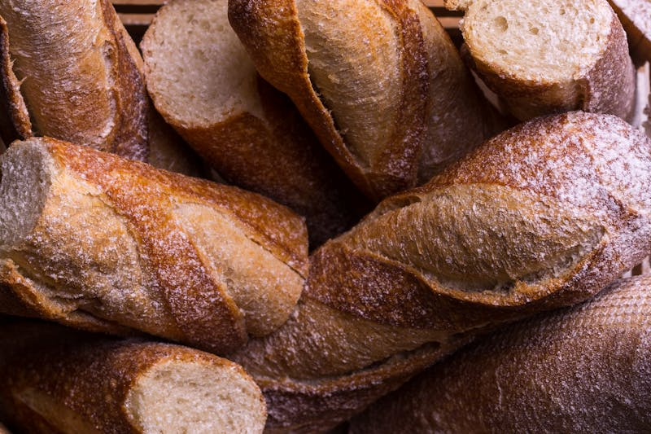
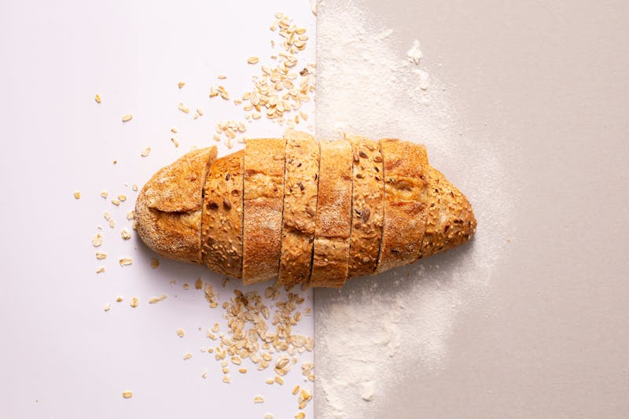
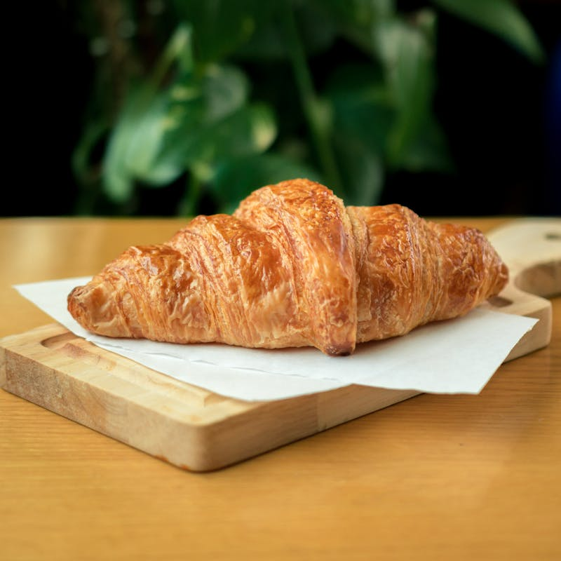
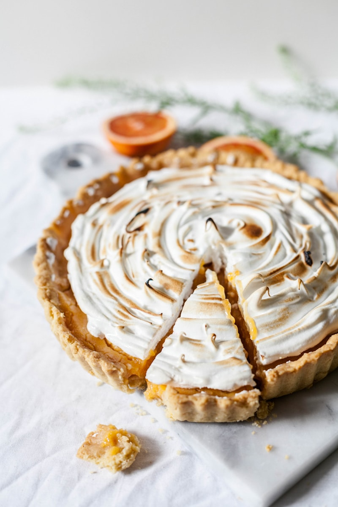
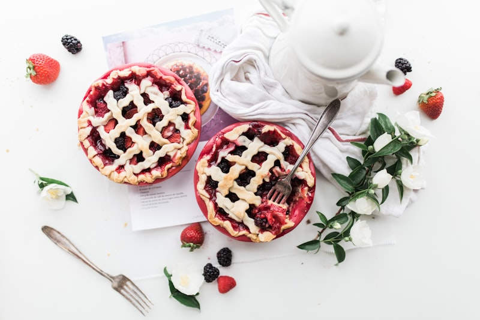
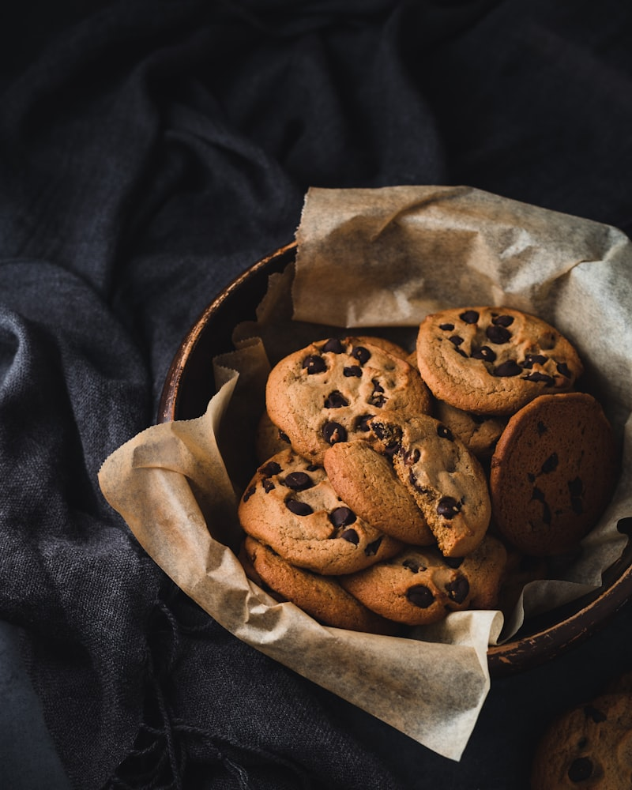

Pain au levain
Notre pain signature. Levain naturel, fermentation 48h+, cuisson sur pierre. Croûte craquante, mie alvéolée et parfumée.

Baguette tradition
Farine Moulins Bourgeois, pétrissage manuelle, façonnage artisanal. Croustillante à souhait.

Pain des amis
Un pain généreux, idéal pour partager. Mie moelleuse, saveur profonde. Parfait pour les repas entre amis.

Pain aux noix
Noix entières dans une mie dense et parfumée. Un classique revisité avec des matières premières d'exception.
Fougasse aux olives
Pâte fine et croustillante, olives de qualité. Parfaite en apéritif ou en accompagnement.

Croissant au beurre AOP
Beurre AOP Charentes-Poitou, tourage fait à la main. Feuilletage croustillant, cœur fondant.

Chausson aux pommes
Pommes de saison, pâte feuilletée maison. Un classique indémodable, préparé avec des fruits du calendrier.
Pain au chocolat
Chocolat sans lécithine de soja, riche en beurre de cacao. Pâte feuilletée maison, croustillante et fondante.

Tarte aux fruits de saison
Selon le calendrier des récoltes. Pâte maison, fruits frais, zéro ingrédient transformé.

Tarte au citron
Citrons frais, meringue maison, pâte sablée croustillante. Un équilibre parfait entre acidité et douceur.
Tarte au chocolat
Chocolat riche en beurre de cacao, sans lécithine de soja. Fondante, intense, sans compromis.
Le savarin
Brioche imbibée au sirop, crème chantilly maison. Une spécialité généreuse.

Financiers
Poudre d'amandes bio, beurre noisette, œufs bio. Petit format, grande gourmandise.
Sablés maison
Beurre AOP, sucre complet bio, farine ancienne. Croustillants, parfumés, irrésistibles.

Café de spécialité
Torréfaction artisanale à Paris. Pas de café brûlé — un café vivant, fruité.
Thé & infusions
Sélection de thés et infusions de qualité. Pour accompagner un moment de douceur.